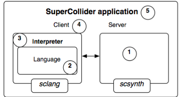
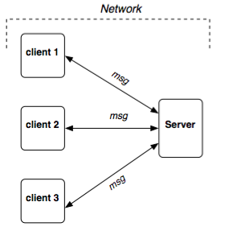
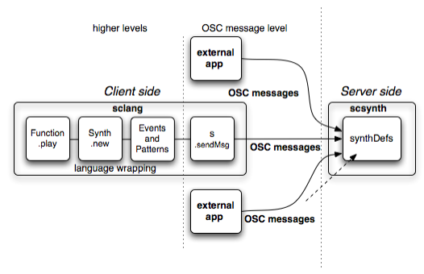

Arquitectura Cliente contra Servidor y Operaciones
El nombre "SuperCollider" es, de hecho, usado para indicar cinco cosas diferentes (Ilustración 1):
1. un servidor de audio
2. un lenguaje de programación de audio
3. un intérprete del lenguaje, i.e. un programa capaz de interpretarlo
4. el programa intérprete como un cliente para el servidor
5. la aplicación que incluye los dos programas y que provee las funcionalidades mencionadas

Ilustración 1. Estructura de la aplicación SuperCollider
La aplicación SuperCollider está, por consiguiente, constituida por dos componentes distintos y autónomos, un servidor y un cliente. El primero es llamado scsynth (SC-sintetizador), el segundo sclang (SC-lenguaje).
Descripción
La aplicación SuperCollider hace uso de la arquitectura cliente/servidor, la cual separa dos funciones, respectivamente, una que requiere los servicios y otra que los provee. El cliente y el servidor se comunican a través de una red ("network").

Ilustración 2. Arquitectura Cliente/Servidor
En la ilustración 2 está representada una arquitectura de red genérica: un número de clientes comunicándose con un servidor mediante el intercambio de mensajes a través de una red. En SuperCollider, el cliente y el servidor hacen uso de un subconjunto específico del protocolo Open Sound Control (OSC) de CNMAT para poder comunicarse (a través de TCP o UDP). Como consecuencia, verás muchas referencias a "mensajes OSC" en los archivos de ayuda.
Para evitar cualquier posible confusión: la red está definida a un nivel abstracto. Esto quiere decir que los clientes y los servidores pueden ser ejecutados en la misma computadora. Esto es lo que normalmente sucede cuando usas la aplicación SuperCollider: dos programas correrán en tu computadora, scsynth y sclang.
La aplicación servidor, scsynth, es un programa de línea de comandos ligero y eficiente, dedicado a la síntesis y al procesamiento de audio. No sabe nada acerca de código de SuperCollider, de Programación Orientada a Objetos ni de ninguna otra cosa que tenga que ver con el lenguaje SuperCollider.
El cliente de este servidor es sclang. SClang lleva a cabo dos tareas diferentes:
1. es el cliente del servidor, i.e. manda mensajes OSC al servidor.
Para poder escribir una carta al servidor, necesitas una hoja de papel y algo que envíe la carta: sclang es ambas cosas.
2. es el intérprete del lenguaje de programación SuperCollider, i.e. permite al usuario escibir código en el lenguaje de programación antes mencionado y ejecutar los comandos resultantes de forma interactiva, e.g. controlar un servidor de audio. En particular, los mensajes OSC pueden ser incómodos de escribir, ya que comparten con el servidor su perspectiva de bajo nivel. El lenguaje SuperCollider es un lenguaje orientado a objetos de alto nivel y muy completo; permite al usuario beneficiarse de un poder mucho más expresivo que los mensajes OSC. Típicamente, el intérprete traduce el código en el lenguaje SuperCollider a mensajes OSC para el servidor. El usuario escribe poesía (es un decir) en el lenguaje SuperCollider, la cual es luego parafraseada en prosa OSC por el intérprete sclang, para ser mandada al servidor.
Desde dentro de sclang, iniciar una aplicación servidor se puede lograr al:
s = Server.default; // crear un nuevo objeto Servidor y asignarlo a la variable s
s.boot; // arrancar la aplicación servidor, i.e. decir al servidor que esté listo para trabajar
El intérprete de sclang puede mandar mensajes OSC a scsynth de dos formas:
- directamente: en este caso, sclang ofrece una delgada capa de sintaxis que permite tratar con mensajes OSC en bruto. Toda la funcionalidad del servidor está, en este caso, disponible "a mano" utilizando el método .sendMsg de Server, y otros mensajes similares.
n = s.nextNodeID; // obtener del servidor un nodeID disponible y asignarlo a n
s.sendMsg("/s_new", "default", n); // utilizar el SynthDef "default" para crear un sintetizador con el ID n
s.sendMsg("/n_free", n); // liberar el synth n
- indirectamente: la aplicación lenguaje te provee de una conveniente funcionalidad de Programación Orientada a Objetos (POO) para dar seguimiento y manipular a los elementos en el servidor. La sintaxis de alto nivel es traducida a mensajes OSC de bajo nivel por sclang y mandada al servidor (envolvimiento de lenguaje).
x = Synth("default"); // crear un sintetizador en el servidor por defecto (s) y asignarle un ID
x.free; // liberar el sintetizador, su ID y sus recursos
Al trabajar de esta forma has ganado cierta funcionalidad. Te provee de un nodeID automáticamente, permite controlar el sintetizador en formas sintácticamente elegantes y eficientes (ver los archivos de ayuda de Synth y de Node) y, al hacer esto, accesar todas las ventajas de la programación orientada a objetos.

Ilustración 3. Sclang como cliente de alto nivel.
El envolvimiento de lenguaje permite al usuario obtener acceso a comportamientos complejos con muy poco código. La Ilustración3 (ignora de momento que sclang esté representado como un cliente dentro de muchos clientes posibles, ver después) representa esquemáticamente lo que sucede cuando evalúas una función de audio como:
// asumiento que el servidor ya haya sido arrancado
{SinOsc.ar}.play ;
En este caso, muchas operaciones del servidor están ocultas. Para entender el código involucrado en la evaluación de este código ve Functions and Other Functionality y SynthDefs and Synths (parte del tutorial de Scott Wilson).
El estilo POO también tiene una pequeña cantidad de coste. Requiere de ciclos de procesador y de memoria del lado del cliente para crear y manipular un objeto. Normalmente, este coste no es significativo, pero puede haber ocasiones en las que prefieras utilizar el primer método, el cual es menos elegante y expresivo, por ejemplo: al crear grandes cantidades de granos que simplemente sonarán y luego se liberarán por si mismos.
Por lo tanto, es posible crear nodos sintetizadores en el servidor sin tener que crear objetos Synth, con tal de que estés dispuesto a llevar a cabo todo el mantenimiento por tu cuenta. Lo mismo es cierto para grupos de nodos, buffers y buses. Una discusión más detallada de estos conceptos puede ser encontrada en el archivo de ayuda NodeMessaging.
En conclusión, lo crucial es recordar la distinción entre elementos como nodos, buses, buffers y servidores, y los objetos que los representan en la aplicación lenguaje (i.e. instancias de las clases Node, Bus, Buffer, y Server; éstas son llamadas 'Objetos de Abstracción del Servidor'). Mantener a estos dos tipos de elementos conceptualmente diferenciados ayudará a evitar mucha confusión.
Pros/Contras
La arquitectura cliente/servidor provee tres ventajas principales:
estabilidad: si el cliente se "crashea", el servidor sigue funcionando, i.e. el audio no se detiene. Esto es intuitivamente relevante en una situación en vivo. Viceversa, si el servidor se "crashea", puedes seguir controlando la situación desde el cliente.
modularidad: síntesis es una cosa, control otra. Separar ambos aspectos le permite a uno (por ejemplo) controlar scsynth desde otras aplicaciones aparte de sclang. Lo único importante es que sean capaces de mandar los mensajes OSC adecuados al servidor.
control remoto: la red cliente/servidor puede ser externa a tu computadora, e.g. a través de internet. Esto permite a uno controlar un servidor de audio en Alaska desde un cliente (sclang u otro) en la India, por ejemplo.
Hay dos notables desventajas:
latencia: El proceso de envío de mensajes introduce una pequeña cantidad de latencia. Esto no debe de ser confundido con latencia de audio, la cual puede ser bastante baja. Sólo significa que hay un pequeño, usualmente insignificante, retraso entre el lado que manda un mensaje y en el que lo recibe y actúa en consecuencia. (Esto puede ser minimizado utilizando el servidor interno ("internal"). Ve Server para más detalles)
ejecución asincrónica: En algunos casos, el cliente puede necesitar saber que una tarea en el servidor (por ejemplo, el procesamiento de un archivo de audio grande) ha sido completada antes de continuar con otra tarea. Debido a que algunas tareas toman una duración de tiempo arbitrario para ser completadas, un mecanismo de respuesta es necesario. Esto puede añadir cierta complejidad a tu código pero, en principio, no es un problema. (Ve OSCresponder y OSCresponderNode.) Algunos objetos de abstracción del servidor, como Buffer, automáticamente proveen este mecanismo a través de sus funciones de acción ("action") y esperan a que su tarea sea completada antes de ejecutar estas funciones.
Una observación final para el lector avanzado
Además de sclang, es posible controlar a scsynth desde cualquier otro cliente que cuente con mensajes OSC (e.g. de Java, Python, Max/MSP, etc.). Para trabajar en red, ver Server-Architecture, NetAddr, OSCresponder, OSCresponderNode.
En general, no obstante, sclang es la manera preferible de comunicarse con scsynth, por tres razones:
- otorga el poder expresivo del lenguaje SuperCollider;
- el lenguaje está explícitamente ajustado a los requisitos de scsynth (y, lo que es más importante, a los de los músicos)
- permite a uno crear y cargar SynthDefs en scsynth (ver SynthDef), lo cual no es una tarea fácil de lograr en otra aplicación cliente